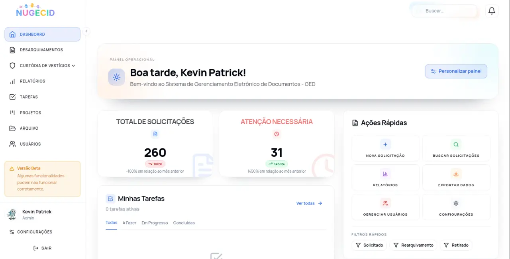

Gestão documental
Organização e acesso aos documentos.
Gestão, preservação e acesso à informação da Polícia Científica do Rio Grande do Norte.
Organização e acesso aos documentos.
Preservação da história e da identidade.
Acesso à produção técnico-científica.
Editoração e divulgação de pesquisas forenses.
Ferramentas que integram tecnologia, conhecimento e transparência.
Sistema de Gestão de Documentos e Desarquivamentos

Revista da Polícia Científica do RN

Repositório institucional

A trajetória da perícia criminal no Rio Grande do Norte.
Uma obra que registra a história, os avanços e os protagonistas da perícia potiguar, do passado ao presente.
Conheça a obraPesquisa conduzida pela Comissão Permanente de Gestão da Memória.
O livro foi publicado em 2024, quando o órgão ainda se chamava Instituto Técnico-Científico de Perícia do Rio Grande do Norte (ITEP-RN), renomeado pela Lei Complementar nº 795, de 8 de outubro de 2025.
Volume 1 · 2024 · ISBN 978-65-01-06618-9
Visualizar PDF (abre em nova aba)